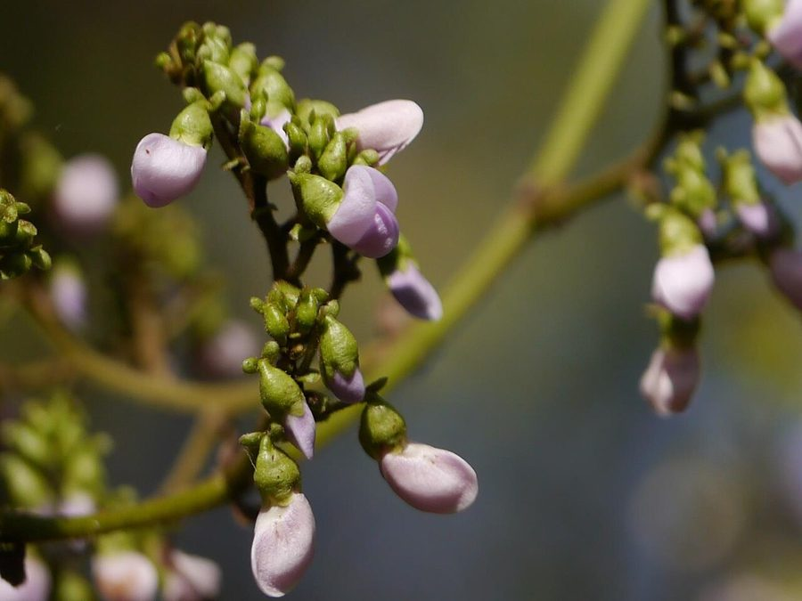

क्लाइम्बिंग रोज़वुडClimbing Rosewood
Dalbergia volubilis · Fabaceae · FLR-0361

- Scientific name वैज्ञानिक नाम
- Dalbergia volubilis Roxb.
- Family कुल
- Fabaceae
- Hindi हिंदी
- क्लाइम्बिंग रोज़वुड
- Local names स्थानीय नाम
- climbing rosewood, klaimbing rozvud, climbing rose wood
- Status here यहाँ की स्थिति
- native
- Movement आवागमन
- Resident, here all year
- Known from कहाँ दर्ज
- Others have published records from the wider Awadh–Purvanchal plain, none yet from Basti–Ayodhya अवध–पूर्वांचल से दूसरों के प्रकाशित अभिलेख, बस्ती–अयोध्या से अभी नहीं
- IUCN IUCN
- not evaluated
- Review समीक्षा
- not yet reviewed
When to look कब देखें
Present all year. साल भर मौजूद।
Uses and possibilities उपयोग और संभावनाएँ
“Traditional medicine” means a documented traditional use, not a claim that it works. Nothing on this page is medical advice.
Drawn from the documented uses in the profile below, where each is labelled traditional, current or a research lead. All uses →
क्लाइम्बिंग रोज़वुड / Climbing Rosewood
Dalbergia volubilis Roxb. — Fabaceae
क्लाइम्बिंग रोज़वुड — यह शीशम कुल की एक मजबूत काष्ठीय लता (लता-वृक्ष) है जो उत्तर और मध्य भारत के जंगलों में पेड़ों के ऊपर चढ़ती है। इसके तने मजबूत होते हैं और कभी-कभी मुड़े हुए कांटों की मदद से सहारे पर टिकते हैं। वसंत ऋतु में जब इसके पत्ते झड़ जाते हैं, तब डालियों पर हल्के नीले-बैंगनी या गुलाबी फूलों के घने गुच्छे खिलते हैं जो बहुत सुंदर दिखते हैं। गर्मियों में इस पर शीशम जैसी पतली चपटी फलियां लगती हैं।
Quick Identification त्वरित पहचान
| Feature | Description |
|---|---|
| Habit | Large woody climbing shrub or liana with thickened stems and spiral woody hooks |
| Leaves | Odd-pinnate compound leaves with multiple alternate oblong obtuse glabrous leaflets |
| Flowers | Small, pale blue, lilac, or purplish-pink, densely crowded in terminal and axillary panicles |
| Inflorescence | Clothed in dense brown velvety pubescence, with main branches horizontal or recurved |
| Fruit | Flat, thin, strap-shaped, glabrous pod, reticulately veined opposite the seeds |
| Field mark | Woody climbing liana with pinnate leaves, dense purplish spring panicles, and flat papery pods |
Field tip: Look in moist riverine woodlands and scrub thickets along stream corridors in spring for a woody climber displaying dense trusses of small lilac-purple papilionaceous flowers on leafless branches.
हिंदी: शीशम जैसी पत्तियों वाली यह बेल पेड़ों पर चढ़ती है। वसंत में पत्ते गिरने के बाद इसकी डालियां हल्के जामुनी-गुलाबी फूलों से भर जाती हैं। इसकी फलियां चपटी और सूखी होती हैं।
Morphology आकारिकी
| Measurement | Range |
|---|---|
| Seeds per pod | 1–2 (Hooker 1879) |
Dalbergia volubilis is an extensive woody climber reaching high into the canopies of surrounding trees, with thick stems that often produce thickened spiral hook-like branchlets to assist in climbing. The bark is smooth and greyish-brown on younger branches, becoming dark and rough on older woody cables. The leaves are alternate and imparipinnately compound. The leaflets are alternate, oblong or obovate-oblong, obtuse or slightly emarginate at the apex, cuneate at the base, and glabrous on both surfaces.
The inflorescence consists of copious, ample, terminal and axillary panicles with horizontal or decurved branches clothed in dense brown velvety pubescence. The flowers are small, subsessile, with minute calyx teeth. The corolla is pale purple, lilac, or bluish-pink, with a clawed standard petal. The stamens are ten, grouped into two bundles of five each. The pod is flat, thin, bright brown, glabrous, strap-shaped, rather thickened and reticulately veined opposite the seeds, containing compressed kidney-shaped seeds.
हिंदी: इस बेल के तने बहुत मजबूत होते हैं और कभी-कभी कांटेदार घुमावों से डालियों को पकड़ते हैं। फूल हल्के बैंगनी रंग के और छोटे होते हैं। फलियां बहुत पतली, चपटी और भूरी होती हैं जिनमें एक या दो बीज होते हैं।
Behaviour & Ecology व्यवहार और पारिस्थितिकी
The climbing rosewood is a characteristic liana of the moist and mixed deciduous forests of northern India. It uses surrounding canopy trees for physical support, ascending through the subcanopy by wrapping its flexible young shoots and anchoring itself with hook-like modified branchlets.
The climber sheds its foliage at the end of the winter season, bursting into profuse blossom on bare branches in spring. The massed lilac flowers emit a delicate fragrance that attracts large numbers of honeybees, stingless bees, and flower-visiting beetles. The flat, thin pods mature rapidly during the hot dry pre-monsoon weeks, functioning as wind-dispersed samaroids that glide on convective winds across forest openings.
हिंदी: यह बेल अपने मुड़े हुए तंतुओं से बड़े पेड़ों पर सहारा लेकर चढ़ती है। वसंत में नंगी डालियों पर एक साथ हजारों फूल खिलते हैं जिन पर मधुमक्खियां मंडराती हैं। इसके हल्के चपटे फल हवा में उड़कर दूर बिखरते हैं।
Life Cycle / Phenology जीवन चक्र
Foliage begins yellowing in January and drops extensively during February. Flowering starts in February and reaches peak display during March and early April, creating striking masses of lilac blossom.
Fruit development occurs through April and May. The flat papery pods ripen to dry light brown by late May and June. During hot pre-monsoon gales, the dry indehiscent pods break off from their stalks and are transported across the woodland floor, germinating with the onset of regular monsoon rains.
हिंदी: माघ के महीने में पत्ते गिरते हैं और फागुन-चैत में बैंगनी फूलों के गुच्छे लद जाते हैं। बैसाख और जेठ में फलियां पककर भूरी हो जाती हैं और आंधी-तूफान के साथ हवा में उड़कर नए इलाकों तक पहुंचती हैं।
Associated Species / Interactions सहजीवी प्रजातियाँ
Dalbergia volubilis relies structurally on common forest trees including Shisham (Dalbergia sissoo) and Palash (Butea monosperma) to reach the sunny canopy.
It serves as a larval host climber for lycaenid butterflies such as the Pea Blue (Lampides boeticus). Apian pollinators including the Giant honeybee (Apis dorsata) exploit its dense spring nectar source.
हिंदी: यह शीशम और पलाश जैसे पेड़ों का सहारा लेकर धूप की ओर बढ़ती है। मटर तितली (पी ब्लू) की सुंडियां इसकी पत्तियों को खाती हैं और जंगली मधुमक्खियां इसके फूलों से शहद जमा करती हैं।
Pests and Diseases कीट और रोग
Young spring flushes and flower buds are sometimes damaged by thrips and blister beetles that feed on floral petals. Leaf-miner larvae can create serpentine whitish mines on mature leaflets in late summer.
Older woody stems are susceptible to wood-rotting shelf fungi where stems suffer mechanical damage from falling branches. The plant is otherwise hardy and regrows vigorously after woodland fires or mechanical clearing.
हिंदी: वसंत के मौसम में कुछ भृंग (बीटल) इसके फूलों की पंखुड़ियों को खा सकते हैं। गर्मियों में पत्तियों पर सफेद लकीरें बनाने वाले कीट लग सकते हैं, लेकिन बेल पर इसका कोई स्थायी असर नहीं पड़ता।
Agricultural / Human Relevance कृषि प्रासंगिकता
Dalbergia volubilis yields strong, flexible, fibrous woody stems that have traditionally been used by rural villagers and forest workers for making durable woven baskets, agricultural fish traps, and strong ropes for securing cattle and fencing.
The leaves are lopped occasionally as emergency green fodder for goats in dry forest tracts. Traditional medicine documents the application of leaf juice as a gargle for sore throat and mouth ulcers, and root decoctions for chronic joint pain; this is a record of traditional use, not medical advice.
Traditional: Stems woven into heavy agricultural baskets and fish traps; leaf juice used for oral inflammation.
Today: Retained in native forest reserves for ecosystem structure and pollinator support.
Research direction (a lead, not a result): Chemical screening of isoflavonoids and neoflavonoids for bioactivity.
हिंदी: इसके लचीले तनों को छीलकर किसान मजबूत टोकरियां और मछली पकड़ने के टापे बनाते हैं। पत्तों का रस मुंह के छालों और गले की खराश में गरारा करने के लिए पारंपरिक रूप से इस्तेमाल किया जाता रहा है।
Expected Locally स्थानीय रूप से अपेक्षित
Not a field record. Written from published accounts for eastern Uttar Pradesh. No confirmed local sighting yet — if you have seen it, that is what the atlas needs.
अभी तक स्थानीय पुष्टि नहीं। यह विवरण प्रकाशित स्रोतों से है, किसी अवलोकन से नहीं।
In eastern Uttar Pradesh, Dalbergia volubilis should be looked for in riverine forests along the Ghaghara, ravine woodland borders, and protected forest blocks in Basti, Ayodhya, and Sant Kabir Nagar districts. GBIF holds published records from the wider Awadh–Purvanchal plain, none yet from Basti–Ayodhya. A confirmed local record requires a dated photograph showing diagnostic floral or vegetative features submitted through the project portal.
हिंदी: बस्ती और अयोध्या के नदी किनारे वाले जंगलों और पुरानी झाड़ियों में इस बेल को खोजा जा सकता है। वसंत ऋतु में इसके बैंगनी फूलों के गुच्छों की तस्वीर खींचकर पोर्टल पर भेजें।
Distribution वितरण
Global range: Native to the Indian subcontinent and Southeast Asia, occurring in India, Nepal, Bangladesh, Myanmar, Thailand, Cambodia, Laos, and Vietnam.
In India: Widely distributed in the sub-Himalayan tract, the central Indian forests, the Gangetic plain, and the Western and Eastern Ghats.
In Uttar Pradesh: Recorded from the Siwalik forest divisions, northern Oudh woodlands, and the Purvanchal plain.
In Basti district / eastern UP: Documented in regional floras for the Upper Gangetic plain; expected in protected woodland patches and river corridors.
हिंदी: यह पूरे भारत के नम और मिश्रित पर्णपाती जंगलों में पाई जाती है। उत्तर प्रदेश के तराई और पूर्वांचल के वनों में इसका स्वाभाविक विस्तार है।
Research Questions शोध प्रश्न
- Which wild bee species are the most effective pollinators of Dalbergia volubilis during its early spring flowering display?
- How does the presence of climbing rosewood lianas affect the canopy growth and health of host timber trees such as Dalbergia sissoo?
- What is the aerodynamic dispersal range of its flat indehiscent pods under typical pre-monsoon storm winds? / आंधी के समय इसकी हल्की फलियां हवा में कितनी दूर तक उड़ पाती हैं?
- What traditional methods were employed by local basket-weavers to harvest and soften its woody stems? / पुराने कारीगर इसकी लकड़ी को लचीला बनाकर टोकरियां कैसे बुनते थे?
- How do secondary isoflavones in its foliage influence herbivory by specialist versus generalist insects?
हिंदी: क्या इसकी फलियों का फैलाव हवा के अलावा बारिश के पानी से भी होता है? परागण करने वाले कीटों के लिए यह बेल कितनी महत्वपूर्ण है, इस पर अध्ययन होना चाहिए।
Similar Species मिलती-जुलती प्रजातियाँ
| Species | How to tell apart | हिंदी | |
|---|---|---|---|
| [[shisham | Dalbergia sissoo]] | Erect tall timber tree with distinct zig-zag branchlets and yellowish-white flowers | शीशम |
| [[palash | Butea monosperma]] | Erect tree with large trifoliolate leathery leaves and massive flaming orange-red flowers | पलाश |
Field rule: Extensive woody climbing habit, multiple alternate oblong leaflets, and dense lilac-purple panicles distinguish Dalbergia volubilis from erect Dalbergia trees.
हिंदी: शीशम एक बड़ा सीधा पेड़ होता है, जबकि क्लाइम्बिंग रोज़वुड एक बड़ी बेल होती है जो दूसरे पेड़ों पर चढ़ती है और इसके फूल नीले-बैंगनी होते हैं।
Taxonomy & Classification वर्गीकरण
Original description. Described by William Roxburgh in 1805 in Plants of the Coast of Coromandel, Vol. 2, p. 48, t. 191.
Subspecies. Monotypic — no subspecies are currently recognised in northern India.
Family and order placement. Placed in the family Fabaceae (subfamily Faboideae), order Fabales.
Phylogenetic notes. Dalbergia volubilis belongs to section Dalbergaria, characterised by diadelphous stamens (5+5) and thin samaroid pods.
IUCN status rationale. Not evaluated by the IUCN Red List (not_evaluated). The species possesses a wide distribution and stable populations across South Asian forests.
हिंदी: इसका पहला वैज्ञानिक विवरण 1805 में विलियम रॉक्सबर्ग ने दिया था। यह शीशम (डालबर्जिया) वंश की चढ़ने वाली प्रजाति है।
Photo Gallery फोटो गैलरी
No photos yet — add field photos to media/species/climbing_rosewood/ and run node scripts/sync_photos.js.
Photos needed आवश्यक फोटो
- [ ] Thick woody climbing stem winding around host tree trunk (पेड़ पर लिपटा हुआ मोटा तना)
- [ ] Panicle of small lilac to bluish-pink flowers in full bloom (बैंगनी फूलों का गुच्छा)
- [ ] Cluster of thin flat strap-shaped brown pods (चपटी पतली फलियों का गुच्छा)
- [ ] Pinnate leaf showing leaflet arrangement (पंखदार पत्ती की बनावट)
References संदर्भ
- Roxburgh, W. (1805). Plants of the Coast of Coromandel, Vol. 2, p. 48, t. 191.
- Hooker, J. D. (1879). The Flora of British India, Vol. 2. L. Reeve & Co., London.
- Duthie, J. F. (1903). Flora of the Upper Gangetic Plain, and of the Adjacent Siwalik and Sub-Himalayan Tracts, Vol. 1. Office of the Superintendent of Government Printing, Calcutta.
- Brandis, D. (1906). Indian Trees: An Account of Trees, Shrubs, Woody Climbers, Bamboos and Palms Included in the Indian Empire. Archibald Constable & Co., London.
- Kirtikar, K. R. & Basu, B. D. (1933). Indian Medicinal Plants, 2nd ed. Lalit Mohan Basu, Allahabad.
- GBIF Occurrence Data — Dalbergia volubilis, India (2025).
Source file: species/flora/climbers/climbing_rosewood.md